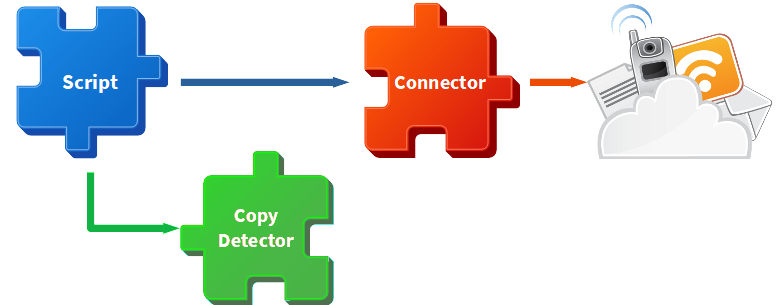

Developer's guide
How to use it as a library
Download and compile
Follow this instructions in order to download and compile the application for the first time:
- Create a folder where the application will be downloaded in.
- Open a terminal and go into the newly crated folder.
- Download the application with the following command:
git clone https://github.com/FherStk/AutoCheck.git. - Go into the downloaded application folder.
- Build the application before using it with the following command:
dotnet build.
Import the libraries
Once compiled, a set of dll files will be available in the \bin\Release\netcoreapp3.0 folder (recomended) or in the \bin\Debug\netcoreapp3.0 folder (de defualt build option), import this files into your project.
Call the scripts
Create new instances of any needed script and invoke its Batch (for a set of items) or Run (for a single item) methods.
Simplified example:
var script = new DAM_M04UF1_Html5Assignment(new string[]{"--path=/home/user/folder/"});
script.Batch();
Console.WriteLine(script.Score());
Please, notice that all the script output will be directly send to the terminal; in future releases, it will be possible to get access the output data disabling (if needed) the terminal.
How to extend the application
Introduction
The main purpose of this application is to automatically check the correctness for a set of assignments delivered by a group of students, so the application must be as easy as possible to use by students (auto evaluate their own work in order to improve it and learn from the mistakes) and by teachers (create new scripts for assisting the correction process).
All the application has been designed with a main purpose in mind: reuse and extend whatever you need. Each component has its own role and responsibilities, detailed as follows:

Connectors
A connector is a bridge between the application and a data source (database, file, whatever) so, a new connector can be created for communication with a new type of file or service if needed. All the connectors must inherit from Core.Connector class and provide access to the connected source (connection string, parsed document, etc.) and any helper or auxiliary method needed for CRUD operations.
Checkers
A checker is a bridge between a connector and a script, so it uses the connector in order to validate CRUD operations returning the result in a way that a script can handle (always returns a list of errors, so an empty list means no errors). All the connectors must inherit from Core.Checker class and provide access to its connector and any helper or auxiliary method needed for checking items or actions.
Scripts
A script is a set of calls to a checker (or checkers) or, to a lesser extent, to a connector (through the checker) in order to perform CRUD operations and validate its results. All the connectors must inherit from Core.Script (or some variants like Core.ScriptFiles or Core.ScriptDB) class and provide access to its properties. Any script must be extremely readable and as simple as possible.
Simplified example:
OpenQuestion("Question 1", "Index");
Checkers.Html index = new Checkers.Html(this.Path, "index.html");
index.Connector.ValidateHTML5AgainstW3C();
OpenQuestion("Question 1.1", "Validating headers", 1);
EvalQuestion(index.CheckIfNodesMatchesAmount("//h1", 1, Checkers.Html.Operator.MIN));
EvalQuestion(index.CheckIfNodesMatchesAmount("//h2", 1, Checkers.Html.Operator.MAX));
CloseQuestion();
OpenQuestion("Question 1.2", "Validating images", 2);
EvalQuestion(index.CheckIfNodesMatchesAmount("//img", 1, Checkers.Html.Operator.EQUALS));
CloseQuestion();
CloseQuestion();
OpenQuestion("Question 2", "Validating text fields", 1.5f);
EvalQuestion(index.CheckIfNodesMatchesAmount("//input[@type='text']", 2));
CloseQuestion();
PrintScore();
Copy detectors
A copy detector is a set of methods which main goal is the check if an student's file is a copy of another one (or some). All the copy detectors must inherit from Core.CopyDetector class and provide an implementation for their abstract methods (it will depend on every file type or content).
Core
The core contains a set of classes intended to be inherited (as mentioned before) but also contains the Output and the Utils. The first one is used for sending data to the output (terminal, log files, etc); the second one contains a set of useful methods and miscellanea.